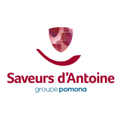
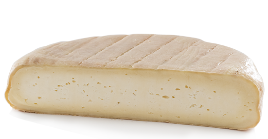

Les fermes Goettelmann
Situées à Meiztralheim en Alsace sont éleveurs et transformateurs de leur produits. Un gage de qualité pour des mets incontournables.
- Spécialités en bocaux, foie gras d'Alsace..
- Charcuterie..
- Choucroute..

Les Saveurs d'Antoine
Filiale du groupe Pomona, ils séléctionnent des produits fins et de grands qualités pour approvisionner les boucher charcutier traiteurs de France.
- Charcutier, traiteur global..
- Paté-croute, quenelles, salaisons..
- Saumons entier ou tranché..

Maison Dodin - Artisans producteurs de Munster
Situées à Lapoutroie la fammille Dodin en Alsace produisent parmi les meilleurs munster de la région.
- Fromage Munster